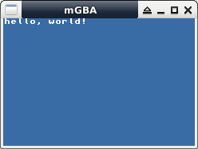

參考資訊：
https://libnds.devkitpro.org/index.html
main.c
#include <stdio.h>
#include <gba_console.h>
#include <gba_video.h>
#include <gba_interrupt.h>
#include <gba_systemcalls.h>
int main(void)
{
consoleDemoInit();
printf("hello, world!");
return 0;
}
Makefile
include $(DEVKITARM)/gba_rules all: arm-none-eabi-gcc -mcpu=arm7tdmi -mtune=arm7tdmi -fomit-frame-pointer -ffast-math -mthumb -mthumb-interwork -I/opt/devkitpro/libgba/include -c main.c -o main.o arm-none-eabi-gcc -mthumb -mthumb-interwork -specs=gba.specs main.o -L/opt/devkitpro/libgba/lib -lgba -o main.elf arm-none-eabi-objcopy -O binary main.elf main.gba clean: rm -rf main.o main.elf main.gba main.sav
編譯、執行
$ sudo docker run --rm -it -v $(pwd):/source nds-env /bin/bash root@960f333001cb:/source# make && exit $ mgba main.gba
完成
